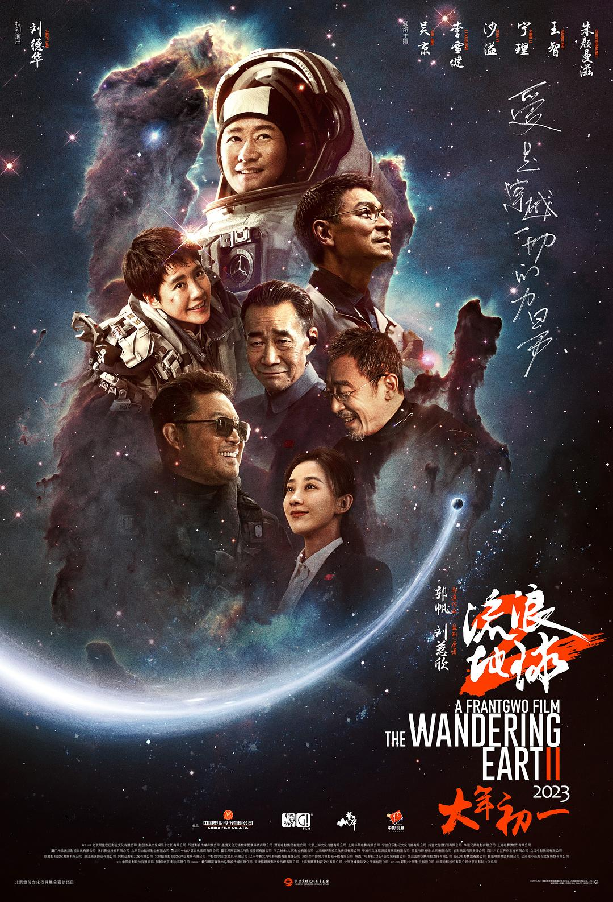

The Wandering Earth 2 (Chinese: 流浪地球2) is a 2023 Chinese science fiction action-adventure film directed and co-written by Frant Gwo, and starring Andy Lau, Wu Jing and Li Xuejian. The film is a prequel to the 2019 film The Wandering Earth, which is based on the short story of the same name by Liu Cixin, who serves as the film's producer.
A fter the major box-office success of its predecessor, a sequel was announced by Guo on 20 November 2019 before it was greenlit on 21 July 2021, with production officially starting on 13 October 2021. The Wandering Earth 2 was released on 22 January 2023.
When the sun dies out, the people of Earth build giant thrusters to move the planet out of orbit and sail to a new star system. After 2,500 years, young people continue the fight for everyone's survival.
In 2058, the aging Sun is about to turn into a red giant and threatens to engulf the Earth's orbit within 100 years, forcing nations to consolidate into the United Earth Government (UEG). The Wandering Earth Project to migrate the Earth out of the Solar System and into the Alpha Centauri system is initiated and uses 12,000 enormous fusion-powered Earth Engines built across the Northern Hemisphere with further Torque Engines along the equator to propel the entirety of planet Earth. Chinese astronaut Liu Peiqiang oversees the gravitational slingshot maneuver of Earth using the gravity of Jupiter to assist propulsion before going on his mission to the Navigation Platform International Space Station to help navigate the Earth along its interstellar journey.